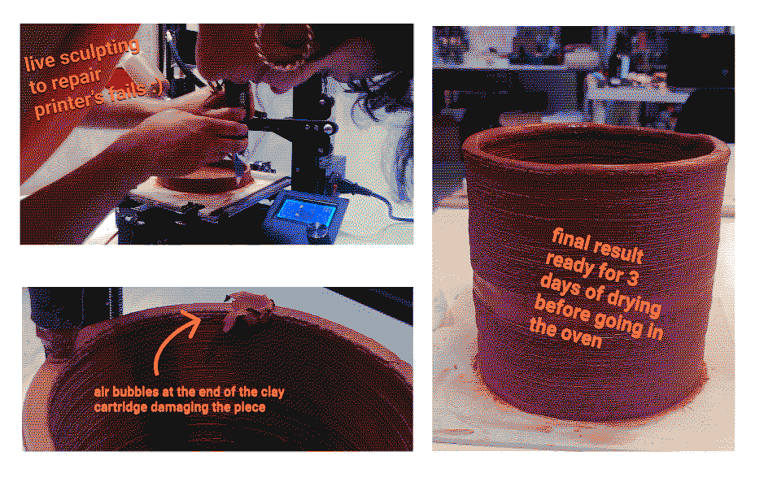

wildcard week - paster 3D printer
fab academy week 9
For this "wildcard week" I have experimented with the 3D printer hacked for paste printing. I did it in the context of the challenge #4 which is documented in the git repo here.
I am interested in the old technique of cooling using the principle of evaporation. This is basically how botijos or zeer pots work for example. I experimented it using a clay pot in another pot with sand in between. You have to wet the sand and as it evaporates with the heat through the pores of the clay, the inside cools down. As I wanted to try the 3D paste printer, I decided to make a simple shape of a cylinder to make a wine bottle cooler so we could use it for our final event during MDEFest as we will show different low tech methods.



tools I worked with
Rhino & GrasshopperHacker Ender 3D printer
Repetier
2 cartridges of clay
learnings
Do a printing test on a small and simple shape before to test the settingsMake sure to stay close to the printer the whole time to adjust the settings if needed. I went away 2 minutes and the first cartridge which was almost finished started to do some air bubbles and damage the piece. I had to manually flatten it again before continuing the printing.